Vsi predlogi uporabljajo enako, bolj umirjeno paleto: globoka črna, šampanjsko zlata v kovinskem prelivu, rožnata kot poudarek in slonokoščena. Izberite smer, nato jo dodelamo do konca.
Modna hiša. Klasična visoko kontrastna pisava in zrcalni monogram PP, kot pri luksuznih modnih znamkah. Diskretno in elegantno: deluje kot klub za starejše goste, VIP in praznovanja.
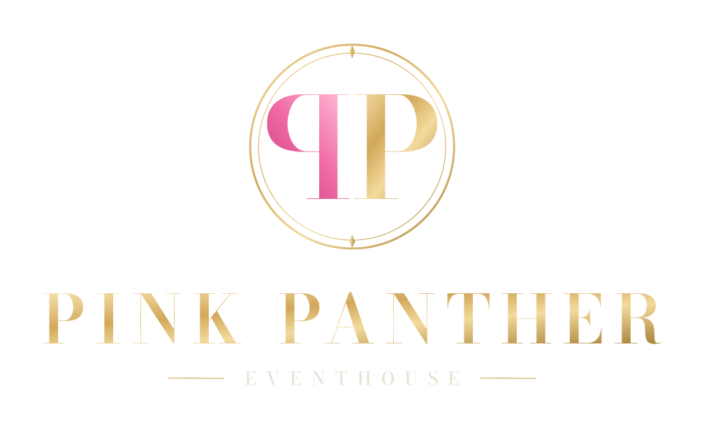
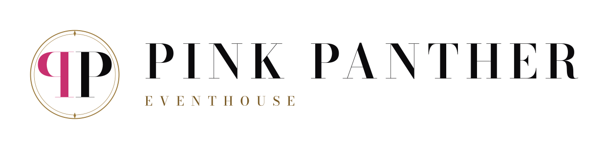
Ležeči · svetlo ozadje
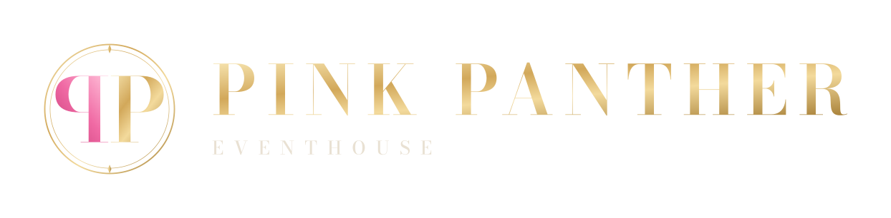
Ležeči · temno ozadje
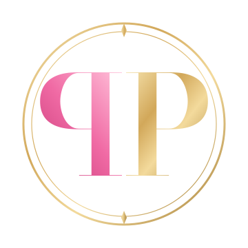
Profilna slika
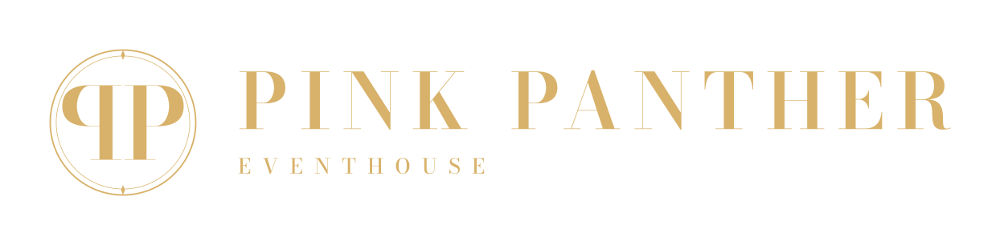
Zlata tabla nad vhodom
2
Gatsby
Poiret One + Marcellus
Art deco iz 20. let: sončni pahljač z mačjo zenico v sredini, tanke geometrijske črke. Glamur, šampanjec, tematski večeri. Odlično za neon in zlate table.
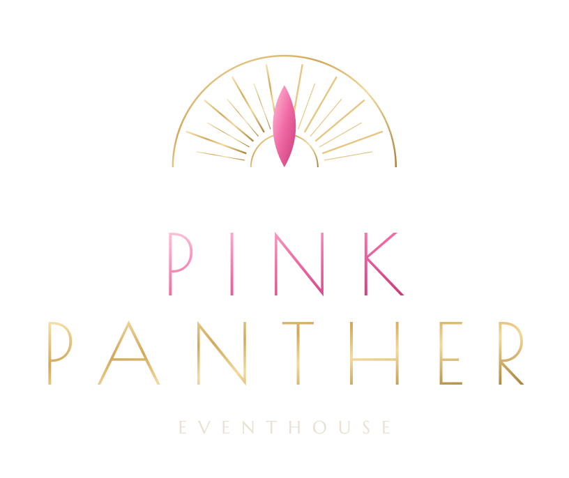
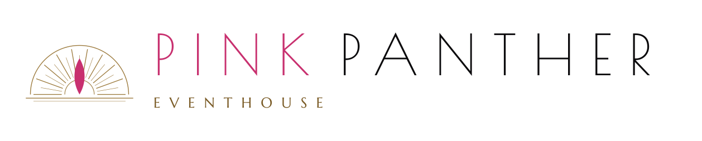
Ležeči · svetlo ozadje
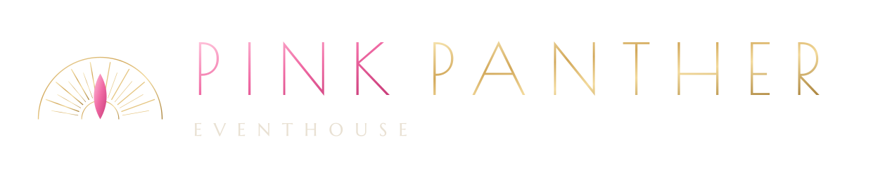
Ležeči · temno ozadje
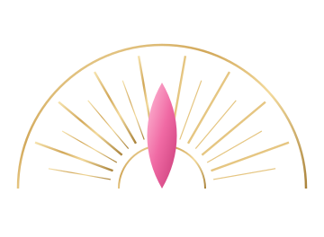
Profilna slika
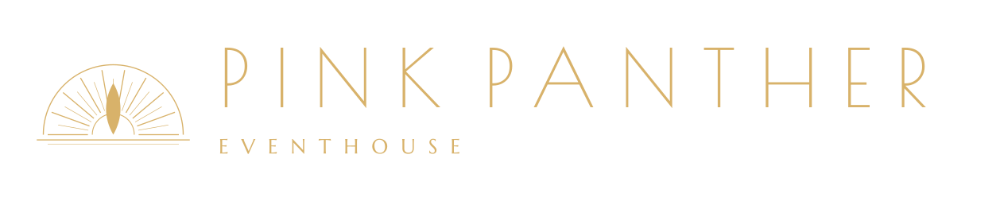
Zlata tabla nad vhodom
3
Royal Crest
Cinzel
Kraljevi pečat: krona nad črko P, okrogel napis z letnico odprtja. Ekskluzivnost in tradicija od prvega dne. Lepo za žig, VIP kartice in vrata.
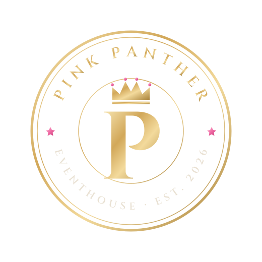
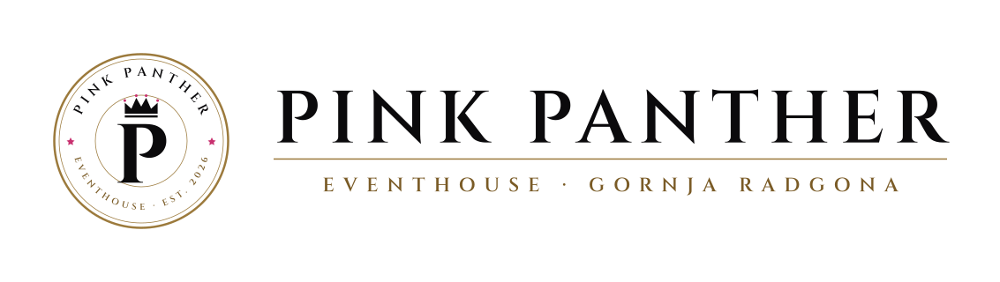
Ležeči · svetlo ozadje
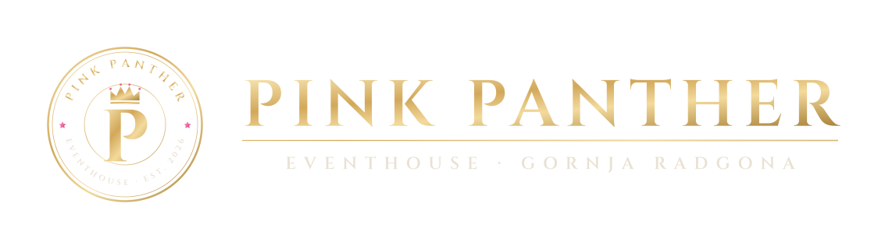
Ležeči · temno ozadje
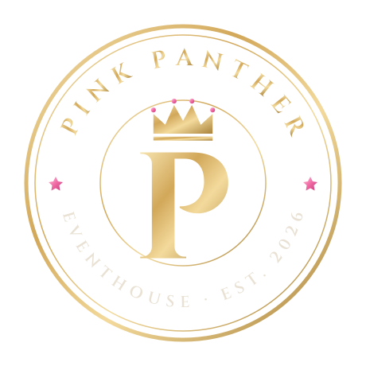
Profilna slika
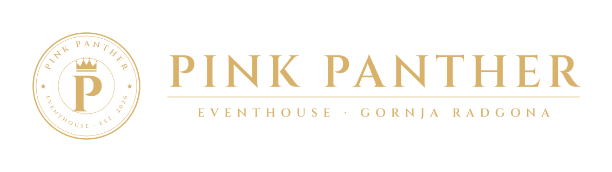
Zlata tabla nad vhodom
4
Velvet
Pinyon Script + Cinzel
Ročna pisava v rožnatem prelivu z zlato potezo, kot podpis. Najbolj ženstven in »lounge« predlog. Prekrasen kot neon napis.
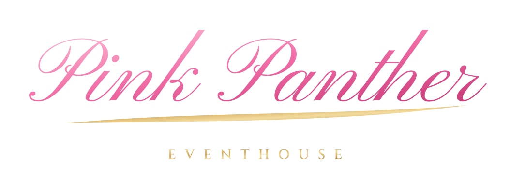
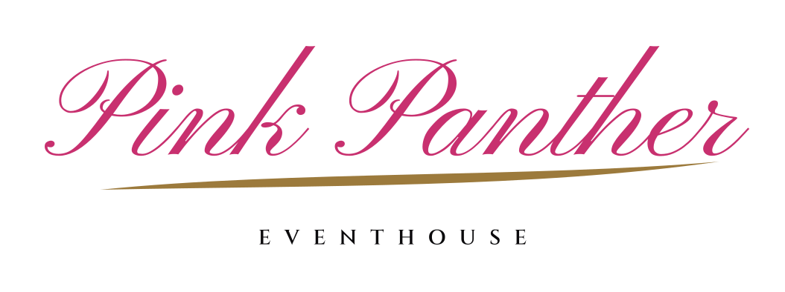
Ležeči · svetlo ozadje
Ležeči · temno ozadje
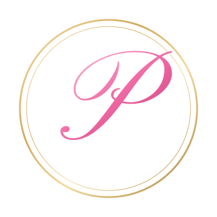
Profilna slika
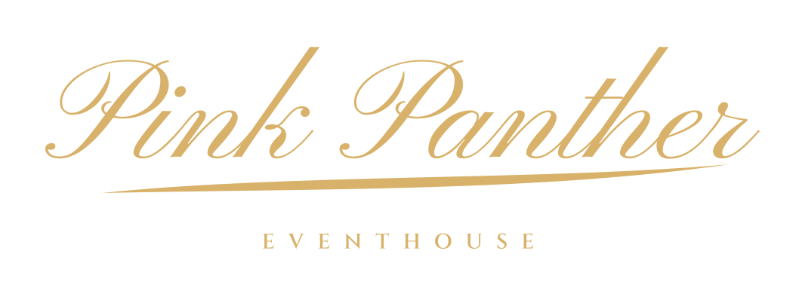
Zlata tabla nad vhodom
5
Noir
Italiana + Josefin Sans
Minimalizem: zelo razprte tanke črke in abstraktno panterjevo oko. Najbolj sodoben in »fashion«; čist na fasadi, v zgodbah in na majicah.